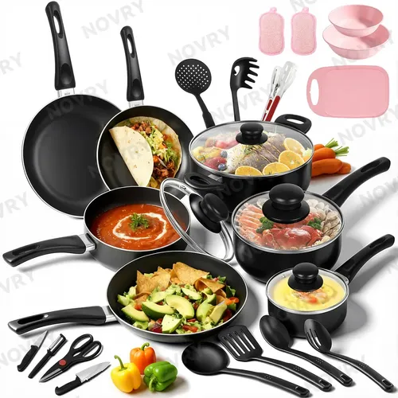

¿Es el bambú realmente mejor? Reseña de tabla premium

Todos empezamos con esas tablas de plástico delgadas y flexibles del supermercado. Son baratas, se pueden meter al lavavajillas y ocupan poco espacio. Pero al poco tiempo están llenas de cortes profundos donde se alojan bacterias, y probablemente estés ingiriendo microplásticos con cada comida que preparas.
El salto natural es pasar a la madera, y el material que domina el mercado actualmente es el bambú. Pusimos a prueba una tabla de bambú premium (de bloque grueso o "end-grain") para ver si justifica el cambio frente al plástico tradicional y cuáles son las verdades ocultas de este material ecológico.
El mito de los cuchillos desafilados
Empecemos con el elefante en la habitación. Los puristas de los cuchillos suelen odiar el bambú alegando que, técnicamente al ser una hierba y no un árbol, es mucho más denso y duro que maderas como el arce o el nogal. Esto significa que puede desafilar la hoja de tu cuchillo de chef más rápido.
¿Es esto cierto? Sí, pero con matices. En un entorno comercial de restaurante donde picas cebollas durante 8 horas seguidas, notarás la diferencia. En una cocina de hogar, donde haces la cena para tu familia, la diferencia de desgaste es apenas perceptible. Lo que sí ganarás a cambio es una tabla que resiste el agua mucho mejor y no se deforma tan fácilmente como otras maderas.
Mira el precio de esta hermosa tabla para tu cocina
Ver disponibilidad de la TablaLa estética y la higiene
Donde el bambú realmente brilla es en la estética. Una tabla gruesa de bambú sobre tu barra eleva inmediatamente el aspecto de tu cocina. Incluso puedes usarla para servir tablas de quesos o charcutería cuando tienes visitas, algo que jamás harías con tu vieja tabla de plástico con marcas de cuchillo.
En cuanto a la higiene, a diferencia del plástico donde las ranuras profundas retienen bacterias que ni el lavavajillas logra sacar, materiales naturales como el bambú tienen propiedades antimicrobianas naturales. Además, como es tan duro, el cuchillo no logra hacer surcos profundos, manteniendo una superficie mucho más sanitaria a lo largo del tiempo.
El cuidado: No es "comprar y olvidar"
Aquí es donde mucha gente se arrepiente de comprar madera: el mantenimiento. Para que esta tabla te dure 10 años sin rajarse por la mitad, tienes que cuidarla. No la puedes meter al lavavajillas jamás (el calor y el agua la deformarán y romperán). Debes lavarla a mano y secarla de pie.
Adicionalmente, tienes que "alimentarla". Una vez al mes, deberás frotarla con aceite mineral de grado alimenticio para hidratar las fibras y evitar que el bambú se reseque. Si estás dispuesto a tomarte estos 2 minutos mensuales de mantenimiento, tendrás una tabla preciosa de por vida.
Conclusión
Una tabla de picar gruesa de bambú es una actualización obligatoria para cualquier hogar que busque alejarse de los microplásticos. Es duradera, ecológicamente sostenible y estéticamente superior.
Si eres un perfeccionista del filo de tus cuchillos, quizás quieras buscar maderas blandas mucho más costosas. Pero para el cocinero casero promedio, el bambú ofrece el mejor equilibrio entre precio, durabilidad e higiene, siempre y cuando estés dispuesto a darle el mantenimiento mensual que merece.